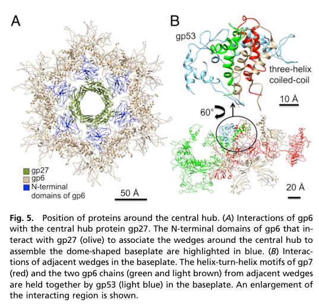

TODO: Add description for P17172
| GO Term | Evidence | Action | Reason |
|---|---|---|---|
|
GO:0098003
viral tail assembly
|
IEA
GO_REF:0000043 |
PENDING |
Summary: TODO: Review this GOA annotation
|
|
GO:0098015
virus tail
|
IEA
GO_REF:0000043 |
PENDING |
Summary: TODO: Review this GOA annotation
|
|
GO:0098025
virus tail, baseplate
|
IEA
GO_REF:0000120 |
PENDING |
Summary: TODO: Review this GOA annotation
|
|
GO:0005515
protein binding
|
IPI
PMID:11823865 Structure of the cell-puncturing device of bacteriophage T4. |
PENDING |
Summary: TODO: Review this GOA annotation
|
|
GO:0005515
protein binding
|
IPI
PMID:15701513 Control of bacteriophage T4 tail lysozyme activity during th... |
PENDING |
Summary: TODO: Review this GOA annotation
|
|
GO:0098015
virus tail
|
IDA
PMID:15701513 Control of bacteriophage T4 tail lysozyme activity during th... |
PENDING |
Summary: TODO: Review this GOA annotation
|
|
GO:0098025
virus tail, baseplate
|
IDA
PMID:27193680 Structure of the T4 baseplate and its function in triggering... |
PENDING |
Summary: TODO: Review this GOA annotation
|
The research report should be a detailed narrative explaining the function, biological processes, and localization of the gene product. Citations should be given for all claims.
You should prioritize authoritative reviews and primary scientific literature when conducting research. You can supplement
this with annotations you find in gene/protein databases, but these can be outdated or inaccurate.
We are specifically interested in the primary function of the gene - for enzymes, what reaction is catalyzed, and what is the substrate specificity? For transporters, what is the substrate? For structural proteins or adapters, what is the broader structural role? For signaling molecules, what is the role in the pathway.
We are interested in where in or outside the cell the gene product carries out its function.
We are also interested in the signaling or biochemical pathways in which the gene functions. We are less interested in broad pleiotropic effects, except where these elucidate the precise role.
Include evidence where possible. We are interested in both experimental evidence as well as inference from structure, evolution, or bioinformatic analysis. Precise studies should be prioritized over high-throughput, where available.
The target protein is gene product 27 (gp27) from Enterobacteria phage T4, UniProt P17172, described in structural biology literature as a baseplate central hub/central spike complex component at the distal tail tip, where it forms a trimer and associates with gp5 and gp5.4. The sources reviewed consistently use “gp27” in this T4 baseplate/tail-tip context, matching the UniProt description and ruling out confusion with unrelated “27” genes from other organisms. (arisaka2016molecularassemblyand pages 1-2, yap2016roleofbacteriophage pages 1-3)
gp27 is a virion structural protein located in the central hub/central spike region of the T4 baseplate. It forms a trimer (three gp27 subunits per complex) that is an essential architectural element of the tail tip “puncturing device” used during infection. (arisaka2016molecularassemblyand pages 8-10, arisaka2016molecularassemblyand pages 1-2, leprince2023phageadsorptionto pages 1-2)
In contractile-tailed myophages like T4, the baseplate is a large multiprotein organelle at the distal end of the tail that (i) orchestrates attachment to the host surface and (ii) triggers tail sheath contraction, driving the tail tube into the cell envelope. The central hub/spike complex sits at the center of the baseplate and includes the membrane-piercing spike. gp27 is a core component of this hub/spike. (hu2015structuralremodelingof pages 1-3, yap2016roleofbacteriophage pages 1-3, yap2016roleofbacteriophage pages 3-5)
Across primary structural studies and authoritative reviews, gp27 is supported as a structural adaptor/hub protein, not a catalytic enzyme, with two central functional roles:
1) Baseplate assembly nucleation and stabilization: gp27 provides the central hub scaffold around which the six baseplate wedges assemble, largely through key contacts with gp6. (yap2016roleofbacteriophage pages 1-3, yap2016roleofbacteriophage pages 3-5)
2) Membrane-puncturing spike architecture: gp27 forms part of the tail-tip puncturing device with gp5 and gp5.4, positioning the spike and contributing to the overall geometry/symmetry of the hub and spike that penetrates the bacterial envelope during infection. (hu2015structuralremodelingof pages 1-3, arisaka2016molecularassemblyand pages 8-10, arisaka2016molecularassemblyand pages 6-8)
The central spike complex is described with the stoichiometry:
- (gp27)3 (gp5)3 (gp5.4)1 (a gp27 trimer + gp5 trimer + single gp5.4 “needle” component) (arisaka2016molecularassemblyand pages 8-10, arisaka2016molecularassemblyand pages 6-8)
The hub–wedge nucleation interaction emphasized in baseplate assembly is:
- gp6–gp27 interaction: gp6 forms a tight ring around the hub and binds gp27 strongly in the dome-shaped baseplate; this interaction is described as critical for nucleating assembly of wedges around the hub. (yap2016roleofbacteriophage pages 3-5, yap2016roleofbacteriophage media 841dd687)
Additional interactions mentioned in the broader T4 tail assembly literature include interaction evidence between gp27 and gp28 as constituents of the central baseplate region. (arisaka2016molecularassemblyand pages 12-12)
A structural description of the hub/spike highlights that gp27 has four domains and that Domains I and III contribute to pseudo-sixfold symmetry in the assembled hub/spike region; gp5.4 exhibits a pseudo-threefold relation relative to the gp27 pseudo-sixfold arrangement, and gp5.4 forms parallel β-sheets with gp5C (a cleaved C-terminal fragment of gp5). (arisaka2016molecularassemblyand pages 6-8)
gp27 functions as part of the assembled extracellular virion, specifically at the distal end of the tail tube in the baseplate’s central hub/spike. During adsorption and infection initiation, this region is positioned against the bacterial cell envelope and participates in the conformational/mechanical events that culminate in sheath contraction and envelope penetration. (hu2015structuralremodelingof pages 1-3, leprince2023phageadsorptionto pages 1-2)
A mechanistic baseplate assembly model supported by structural analysis describes:
- Wedges assemble first, then six wedges assemble around the central hub.
- gp6 binds tightly around gp27, and this gp6–gp27 association is described as the nucleation step for dome-shaped baseplate assembly.
- Subsequent binding of other components stabilizes the baseplate and initiates tail tube and tail sheath polymerization.
These events place gp27 as an early organizational hub for downstream tail morphogenesis. (yap2016roleofbacteriophage pages 3-5)
Cryo-electron tomography (in situ) supports a pathway of early infection intermediates in which baseplate conformational changes precede sheath contraction and envelope penetration, consistent with the baseplate acting as a signal-transducing machine. In this framework, the tail tip spike complex—containing gp27—is the membrane-proximal device that physically participates in penetration and likely couples mechanical rearrangements to cell-envelope interaction. (hu2015structuralremodelingof pages 3-4, hu2015structuralremodelingof pages 1-3)
UniProt/domain databases may annotate gp27 with peptidase-like domains, but direct experimental evidence in the retrieved T4-focused literature assigns catalytic activity at the tail tip to gp5 (specifically gp5*) rather than gp27.
Key evidence:
- gp5 is proteolytically cleaved (maturation cleavage reported at Ser351–Ala352) producing gp5 (N-terminal fragment) with lysozyme activity and gp5C (β-helix structural needle). (arisaka2016molecularassemblyand pages 8-10)
- The stoichiometric spike complex is described as (gp27–gp5–gp5C)3–gp5.4, and gp5C (and likely gp5.4) dissociate upon penetration, thereby exposing gp5*** enzymatic activity to degrade peptidoglycan in the periplasm. (hu2015structuralremodelingof pages 1-3)
Within this evidence set, gp27 is best annotated as a structural protein without a demonstrated catalytic substrate specificity in T4; the “peptidase-like” annotation is more consistent with structural/evolutionary homology than with established proteolysis by gp27 in the T4 infection cycle. (hu2015structuralremodelingof pages 1-3, arisaka2016molecularassemblyand pages 8-10)
Direct new experimental structures of T4 gp27 itself were not retrieved from 2023–2024 in this run; however, multiple 2023–2024 papers explicitly leverage T4 gp27 as an archetype for baseplate central spike architecture and for understanding infection mechanisms and applications.
A 2023 review on phage adsorption identifies the T4 puncturing device as being formed by gp27 (baseplate hub protein), gp5 (spike), and gp5.4, reflecting ongoing consensus use of the T4 gp27-centric model for understanding adsorption and cell wall penetration machinery. (Leprince & Mahillon, published 10 Jan 2023; https://doi.org/10.3390/v15010196) (leprince2023phageadsorptionto pages 1-2)
A high-resolution whole-virion cryo-EM study of Pseudomonas phage E217 (a PB1-like myovirus used in an experimental phage cocktail targeting cystic-fibrosis-associated Pseudomonas infections) reported structures at 3.1 Å (pre-ejection) and 4.5 Å (post-ejection) and explicitly frames the T4 baseplate as a key structural reference point, underscoring continuing translational relevance of T4-like baseplate/hub/spike design principles. (Li et al., accepted 27 Jun 2023; https://doi.org/10.1038/s41467-023-39756-z) (li2023highresolutioncryoemstructure pages 1-2)
A 2024 study of lactococcal phage TP901-1 reports that mutations enabling infection map to an N-terminal “gp27-like domain” in Tal and proposes (via AlphaFold2) that these substitutions promote conformational changes facilitating DNA ejection even without the usual trigger. This supports the broader view that gp27-like domains are conserved mechanical elements in tailed-phage tail tips/baseplates that influence genome-delivery transitions. (Ruiz-Cruz et al., published 12 Aug 2024; https://doi.org/10.1128/aem.00694-24) (ruizcruz2024thetalgene pages 1-2)
A 2024 cryo-EM study of the flexible-tailed Agrobacterium phage Milano notes that it contains a Baseplate Central Spike (BCS, gp27)-type component (terminology explicitly linked to T4), illustrating how gp27-like components are used as reference modules across diverse contractile injection systems. (Sonani et al., accepted 10 Jan 2024; https://doi.org/10.1038/s41467-024-44959-z) (sonani2024anextensivedisulfide pages 1-2)
Although T4 gp27 itself is not typically an engineered therapeutic target, its architectural principles are central to:
- Phage therapy structural optimization: high-resolution structures of therapeutic phages continue to reference T4 baseplate/hub/spike machinery to interpret receptor engagement and genome ejection mechanisms. (li2023highresolutioncryoemstructure pages 1-2)
- Engineering of contractile injection systems (CIS) and tailocin-like bacteriocins: gp27-like central spike modules are repeatedly used as conceptual/structural comparators when designing or understanding puncturing devices in antibacterial nanomachines. (sonani2024anextensivedisulfide pages 1-2, ruizcruz2024thetalgene pages 1-2)
Taken together, the most authoritative mechanistic sources in this evidence set support the following functional annotation:
The following table provides an evidence-mapped summary of gp27’s functional annotation, including key claims, quantitative values, and DOI links.
| Claim | Evidence summary | Key sources with publication year | DOI URL |
|---|---|---|---|
| Identity / aliases | UniProt P17172 corresponds to Enterobacteria phage T4 gene product 27, commonly called gp27, also described as the baseplate central spike complex protein, hub protein 27, or central hub component of the T4 tail/baseplate; literature consistently places gp27 in the T4 baseplate central hub/spike rather than unrelated genes named “27” in other organisms. (arisaka2016molecularassemblyand pages 1-2, yap2016roleofbacteriophage pages 1-3) | Arisaka et al. 2016; Yap et al. 2016 | https://doi.org/10.1007/s12551-016-0230-x ; https://doi.org/10.1073/pnas.1601654113 |
| Localization in virion | gp27 is localized at the distal end of the tail tube / baseplate central hub, where it forms part of the membrane-puncturing central spike device at the tail tip. It is not a soluble host-cell protein; its function is virion-associated and extracellular during adsorption/infection. (hu2015structuralremodelingof pages 1-3, arisaka2016molecularassemblyand pages 8-10, leprince2023phageadsorptionto pages 1-2) | Hu et al. 2015; Arisaka et al. 2016; Leprince & Mahillon 2023 | https://doi.org/10.1073/pnas.1501064112 ; https://doi.org/10.1007/s12551-016-0230-x ; https://doi.org/10.3390/v15010196 |
| Complex / stoichiometry | The central spike/hub is reported as (gp27)3(gp5)3(gp5.4)1 or described equivalently as trimers of gp27 and gp5 terminated by a single gp5.4 needle. gp27 itself is a trimer of ~391 aa subunits. (arisaka2016molecularassemblyand pages 8-10, arisaka2016molecularassemblyand pages 1-2, arisaka2016molecularassemblyand pages 6-8) | Arisaka et al. 2016 | https://doi.org/10.1007/s12551-016-0230-x |
| Interaction partners | Directly associated partners include gp5 and gp5.4 in the central spike, gp6 in wedge-to-hub/baseplate assembly, and evidence also supports interaction with gp28 in the central baseplate region. (yap2016roleofbacteriophage pages 1-3, yap2016roleofbacteriophage pages 3-5, arisaka2016molecularassemblyand pages 12-12) | Yap et al. 2016; Arisaka et al. 2016 | https://doi.org/10.1073/pnas.1601654113 ; https://doi.org/10.1007/s12551-016-0230-x |
| Role in assembly | gp27 is a hub nucleation/organizational protein for baseplate assembly: six wedges assemble around the central hub, and tight gp6–gp27 contacts are critical for forming the high-energy, dome-shaped baseplate. In the absence of gp27, gp6 assembles only into the low-energy star-shaped arrangement. (yap2016roleofbacteriophage pages 1-3, yap2016roleofbacteriophage pages 3-5, yap2016roleofbacteriophage media 841dd687) | Yap et al. 2016 | https://doi.org/10.1073/pnas.1601654113 |
| Role in infection initiation | gp27 is part of the cell-puncturing device that transmits conformational changes from receptor engagement/baseplate rearrangement to tail contraction and membrane penetration. During infection, the spike complex includes gp27 with gp5/gp5C and gp5.4; gp5C and likely gp5.4 dissociate upon outer-membrane penetration, exposing gp5* lysozyme activity in the periplasm. (hu2015structuralremodelingof pages 1-3, hu2015structuralremodelingof pages 3-4, leprince2023phageadsorptionto pages 1-2) | Hu et al. 2015; Leprince & Mahillon 2023 | https://doi.org/10.1073/pnas.1501064112 ; https://doi.org/10.3390/v15010196 |
| Enzymatic activity evidence (gp27 vs gp5*) | Available structural/functional evidence supports no demonstrated peptidase or lysozyme activity for gp27 itself. The enzymatic activity in the spike complex belongs to gp5, the N-terminal cleavage product of gp5, which has lysozyme/peptidoglycan-degrading activity; gp5 is cleaved at Ser351–Ala352*. The peptidase-like domain annotations for gp27 therefore appear best interpreted as structural/evolutionary homology rather than proven catalysis in T4 gp27. (hu2015structuralremodelingof pages 1-3, arisaka2016molecularassemblyand pages 8-10, fokine2016commonevolutionaryorigin pages 1-3) | Hu et al. 2015; Arisaka et al. 2016; Fokine & Rossmann 2016 | https://doi.org/10.1073/pnas.1501064112 ; https://doi.org/10.1007/s12551-016-0230-x ; https://doi.org/10.1016/j.str.2016.08.013 |
| Key quantitative data | T4 baseplate size estimates include ~3.3 MDa for the in vitro-assembled hubless baseplate and ~6–6.5 MDa for the complete baseplate; diameter is about 490 Å and total protein count about 134–145 subunits/proteins depending on assembly definition. High-resolution structural data cited for T4 baseplate/tail include ~4.2 Å crystallography and 3.8 Å cryo-EM; recent comparison systems include E217 whole virion maps at 3.1 Å (extended) and 4.5 Å (contracted), illustrating continued relevance of T4 gp27-like architecture in 2023 structural biology. (arisaka2016molecularassemblyand pages 1-2, yap2016roleofbacteriophage pages 1-3, li2023highresolutioncryoemstructure pages 1-2) | Arisaka et al. 2016; Yap et al. 2016; Li et al. 2023 | https://doi.org/10.1007/s12551-016-0230-x ; https://doi.org/10.1073/pnas.1601654113 ; https://doi.org/10.1038/s41467-023-39756-z |
Table: This table summarizes the main functional-annotation facts for Enterobacteria phage T4 gp27 (UniProt P17172), including identity, localization, interactions, assembly role, infection role, catalytic evidence, and quantitative structural data. It is useful as a compact evidence map for distinguishing experimentally supported functions from inferred domain annotations.
Figure evidence showing gp6–gp27 hub interactions and wedge-around-hub baseplate assembly is available from Yap et al. 2016. (yap2016roleofbacteriophage media 841dd687, yap2016roleofbacteriophage media 90c26d0c)
References
(arisaka2016molecularassemblyand pages 1-2): Fumio Arisaka, Moh Lan Yap, Shuji Kanamaru, and Michael G. Rossmann. Molecular assembly and structure of the bacteriophage t4 tail. Biophysical Reviews, 8:385-396, Nov 2016. URL: https://doi.org/10.1007/s12551-016-0230-x, doi:10.1007/s12551-016-0230-x. This article has 55 citations and is from a peer-reviewed journal.
(yap2016roleofbacteriophage pages 1-3): Moh Lan Yap, Thomas Klose, Fumio Arisaka, Jeffrey A. Speir, David Veesler, Andrei Fokine, and Michael G. Rossmann. Role of bacteriophage t4 baseplate in regulating assembly and infection. Proceedings of the National Academy of Sciences, 113:2654-2659, Feb 2016. URL: https://doi.org/10.1073/pnas.1601654113, doi:10.1073/pnas.1601654113. This article has 113 citations and is from a highest quality peer-reviewed journal.
(arisaka2016molecularassemblyand pages 8-10): Fumio Arisaka, Moh Lan Yap, Shuji Kanamaru, and Michael G. Rossmann. Molecular assembly and structure of the bacteriophage t4 tail. Biophysical Reviews, 8:385-396, Nov 2016. URL: https://doi.org/10.1007/s12551-016-0230-x, doi:10.1007/s12551-016-0230-x. This article has 55 citations and is from a peer-reviewed journal.
(leprince2023phageadsorptionto pages 1-2): Audrey Leprince and Jacques Mahillon. Phage adsorption to gram-positive bacteria. Viruses, 15:196, Jan 2023. URL: https://doi.org/10.3390/v15010196, doi:10.3390/v15010196. This article has 104 citations.
(hu2015structuralremodelingof pages 1-3): Bo Hu, William Margolin, Ian J. Molineux, and Jun Liu. Structural remodeling of bacteriophage t4 and host membranes during infection initiation. Proceedings of the National Academy of Sciences, 112:E4919-E4928, Aug 2015. URL: https://doi.org/10.1073/pnas.1501064112, doi:10.1073/pnas.1501064112. This article has 317 citations and is from a highest quality peer-reviewed journal.
(yap2016roleofbacteriophage pages 3-5): Moh Lan Yap, Thomas Klose, Fumio Arisaka, Jeffrey A. Speir, David Veesler, Andrei Fokine, and Michael G. Rossmann. Role of bacteriophage t4 baseplate in regulating assembly and infection. Proceedings of the National Academy of Sciences, 113:2654-2659, Feb 2016. URL: https://doi.org/10.1073/pnas.1601654113, doi:10.1073/pnas.1601654113. This article has 113 citations and is from a highest quality peer-reviewed journal.
(arisaka2016molecularassemblyand pages 6-8): Fumio Arisaka, Moh Lan Yap, Shuji Kanamaru, and Michael G. Rossmann. Molecular assembly and structure of the bacteriophage t4 tail. Biophysical Reviews, 8:385-396, Nov 2016. URL: https://doi.org/10.1007/s12551-016-0230-x, doi:10.1007/s12551-016-0230-x. This article has 55 citations and is from a peer-reviewed journal.
(yap2016roleofbacteriophage media 841dd687): Moh Lan Yap, Thomas Klose, Fumio Arisaka, Jeffrey A. Speir, David Veesler, Andrei Fokine, and Michael G. Rossmann. Role of bacteriophage t4 baseplate in regulating assembly and infection. Proceedings of the National Academy of Sciences, 113:2654-2659, Feb 2016. URL: https://doi.org/10.1073/pnas.1601654113, doi:10.1073/pnas.1601654113. This article has 113 citations and is from a highest quality peer-reviewed journal.
(arisaka2016molecularassemblyand pages 12-12): Fumio Arisaka, Moh Lan Yap, Shuji Kanamaru, and Michael G. Rossmann. Molecular assembly and structure of the bacteriophage t4 tail. Biophysical Reviews, 8:385-396, Nov 2016. URL: https://doi.org/10.1007/s12551-016-0230-x, doi:10.1007/s12551-016-0230-x. This article has 55 citations and is from a peer-reviewed journal.
(hu2015structuralremodelingof pages 3-4): Bo Hu, William Margolin, Ian J. Molineux, and Jun Liu. Structural remodeling of bacteriophage t4 and host membranes during infection initiation. Proceedings of the National Academy of Sciences, 112:E4919-E4928, Aug 2015. URL: https://doi.org/10.1073/pnas.1501064112, doi:10.1073/pnas.1501064112. This article has 317 citations and is from a highest quality peer-reviewed journal.
(li2023highresolutioncryoemstructure pages 1-2): Fenglin Li, Chun-Feng David Hou, Ravi K. Lokareddy, Ruoyu Yang, Francesca Forti, Federica Briani, and Gino Cingolani. High-resolution cryo-em structure of the pseudomonas bacteriophage e217. Nature Communications, Jul 2023. URL: https://doi.org/10.1038/s41467-023-39756-z, doi:10.1038/s41467-023-39756-z. This article has 56 citations and is from a highest quality peer-reviewed journal.
(arisaka2016molecularassemblyand pages 2-4): Fumio Arisaka, Moh Lan Yap, Shuji Kanamaru, and Michael G. Rossmann. Molecular assembly and structure of the bacteriophage t4 tail. Biophysical Reviews, 8:385-396, Nov 2016. URL: https://doi.org/10.1007/s12551-016-0230-x, doi:10.1007/s12551-016-0230-x. This article has 55 citations and is from a peer-reviewed journal.
(ruizcruz2024thetalgene pages 1-2): Sofía Ruiz-Cruz, Andrea Erazo Garzon, Christian Cambillau, Guillermo Ortiz Charneco, Gabriele Andrea Lugli, Marco Ventura, Jennifer Mahony, and Douwe van Sinderen. The tal gene of lactococcal bacteriophage tp901-1 is involved in dna release following host adsorption. Applied and Environmental Microbiology, Sep 2024. URL: https://doi.org/10.1128/aem.00694-24, doi:10.1128/aem.00694-24. This article has 1 citations and is from a peer-reviewed journal.
(sonani2024anextensivedisulfide pages 1-2): Ravi R. Sonani, Lee K. Palmer, Nathaniel C. Esteves, Abigail A. Horton, Amanda L. Sebastian, Rebecca J. Kelly, Fengbin Wang, Mark A. B. Kreutzberger, William K. Russell, Petr G. Leiman, Birgit E. Scharf, and Edward H. Egelman. An extensive disulfide bond network prevents tail contraction in agrobacterium tumefaciens phage milano. Nature Communications, Jan 2024. URL: https://doi.org/10.1038/s41467-024-44959-z, doi:10.1038/s41467-024-44959-z. This article has 18 citations and is from a highest quality peer-reviewed journal.
(fokine2016commonevolutionaryorigin pages 1-3): Andrei Fokine and Michael G. Rossmann. Common evolutionary origin of procapsid proteases, phage tail tubes, and tubes of bacterial type vi secretion systems. Structure, 24 11:1928-1935, Nov 2016. URL: https://doi.org/10.1016/j.str.2016.08.013, doi:10.1016/j.str.2016.08.013. This article has 43 citations and is from a domain leading peer-reviewed journal.
(yap2016roleofbacteriophage media 90c26d0c): Moh Lan Yap, Thomas Klose, Fumio Arisaka, Jeffrey A. Speir, David Veesler, Andrei Fokine, and Michael G. Rossmann. Role of bacteriophage t4 baseplate in regulating assembly and infection. Proceedings of the National Academy of Sciences, 113:2654-2659, Feb 2016. URL: https://doi.org/10.1073/pnas.1601654113, doi:10.1073/pnas.1601654113. This article has 113 citations and is from a highest quality peer-reviewed journal.

id: P17172
gene_symbol: P17172
product_type: PROTEIN
status: INITIALIZED
taxon:
id: NCBITaxon:10665
label: Enterobacteria phage T4
description: 'TODO: Add description for P17172'
existing_annotations:
- term:
id: GO:0098003
label: viral tail assembly
evidence_type: IEA
original_reference_id: GO_REF:0000043
review:
summary: 'TODO: Review this GOA annotation'
action: PENDING
- term:
id: GO:0098015
label: virus tail
evidence_type: IEA
original_reference_id: GO_REF:0000043
review:
summary: 'TODO: Review this GOA annotation'
action: PENDING
- term:
id: GO:0098025
label: virus tail, baseplate
evidence_type: IEA
original_reference_id: GO_REF:0000120
review:
summary: 'TODO: Review this GOA annotation'
action: PENDING
- term:
id: GO:0005515
label: protein binding
evidence_type: IPI
original_reference_id: PMID:11823865
review:
summary: 'TODO: Review this GOA annotation'
action: PENDING
- term:
id: GO:0005515
label: protein binding
evidence_type: IPI
original_reference_id: PMID:15701513
review:
summary: 'TODO: Review this GOA annotation'
action: PENDING
- term:
id: GO:0098015
label: virus tail
evidence_type: IDA
original_reference_id: PMID:15701513
review:
summary: 'TODO: Review this GOA annotation'
action: PENDING
- term:
id: GO:0098025
label: virus tail, baseplate
evidence_type: IDA
original_reference_id: PMID:27193680
review:
summary: 'TODO: Review this GOA annotation'
action: PENDING
references:
- id: GO_REF:0000043
title: Gene Ontology annotation based on UniProtKB/Swiss-Prot keyword mapping
findings: []
- id: GO_REF:0000120
title: Combined Automated Annotation using Multiple IEA Methods
findings: []
- id: PMID:11823865
title: Structure of the cell-puncturing device of bacteriophage T4.
findings: []
- id: PMID:15701513
title: Control of bacteriophage T4 tail lysozyme activity during the infection process.
findings: []
- id: PMID:27193680
title: Structure of the T4 baseplate and its function in triggering sheath contraction.
findings: []
{kind=link}